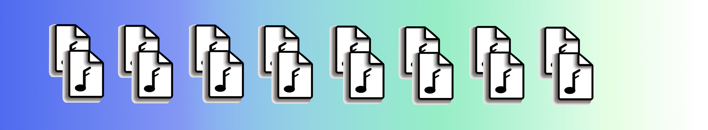
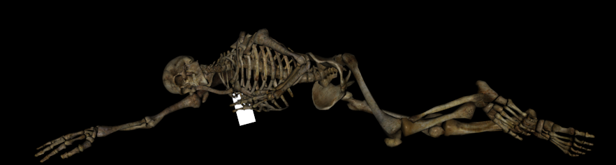

Put 50 music files on your phone that are not tied to any monthly plan.
A personal stash of music allows you to connect with some of your music anytime, whether your phone is connected or not. It's free. You have a right to copy any music files to your phone that you have purchased, copied from other media formats you have purchased, or which were made available for your use by the rights owner. Your music files are your data, and copying your data to your phone for your own use is fair.
Ever notice music no longer accessible on Spotify or Bandcamp? Nothing is forever. If you want to keep it, get it and download it. If you want it with you, put it on your phone.
Acquiring music has cost, but budgeting for 2 albums a month enables a respectable pace for building a great personal music collection. Actual cost varies. Physical media albums can range from a few cents for an inexpensive used CD all the way up to tens or even hundreds of dollars for rare vinyl. Digital downloads are typically in the range of 10 +/- 4 dollars. I usually figure somewhere around $20/month is a decent allowance.
Many new music releases have purchase options for digital download that directly support the artists, providing a great way to connect and show your appreciation. For artists who are no longer living, I prefer used physical media as it helps me connect with their time and what they created in context. To make budgeting easier, you might find it helpful to buy a gift certificate first, then use that for purchases. Personally I like to ante up for new music acquisition since it makes the process more engaging and it's easier to decide.
If your available monthly music budget is more than $20, consider augmenting your digital purchase with physical media, other merchandise, live show tickets, or other patronage. All these things mean a lot to any artist. If your available monthly music budget is less than $20, you might have to be more selective, but even if your available budget is zero, you can still find great music. Keep an eye out for creative commons licensing, free releases, and promotional codes. Listeners are the foundation of the music community, and we all have a part in it regardless of how much we each have to contribute at any time.

It's the same space on your phone whether you use offline streaming services or copy music over yourself. The difference is that files you copy over directly are accessible from different players and they don't disappear if you remove an app.
Android and iOS both provide ways to connect your phone to a computer and copy music files over. They also provide ways to download from the net. Copying music files to your phone is not difficult, but if you haven't done it before it's worth looking up recent instructions how to copy music files directly for your specific type of phone.
Google and Apple would probably prefer you purchase their monthly music service instead, just like any other streaming service, but they still allow you to control your own data on your phone. No monthly fees required. You can use the default player that comes with your phone, or your choice of any other player tailored for how you want to listen. If you would like to curate your music for automated listening, try Digger (I wrote it, I use it).
Controlling your own data is freedom.

Copying music files to your phone is empowering. It's great having your music available whenever you want to listen to it, with or without WiFi. You might also notice a stronger feeling of cultural connection from owning your music rather than renting it. Turns out you can, in fact, take it with you. As long as you're alive anyway.
If copying music files to your phone opens any new insights for you about how you interact or feel about your music or the artists you listen to, I'd be interested in hearing about it. Comments welcome.
cheers,
-ep